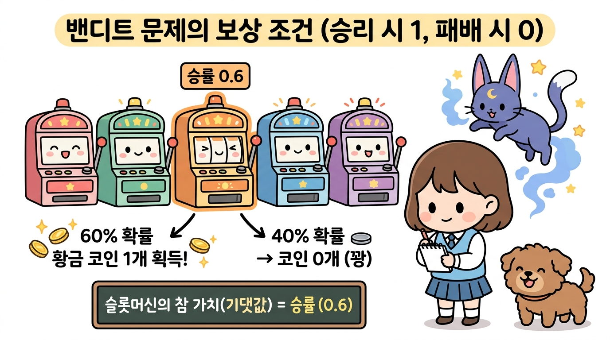
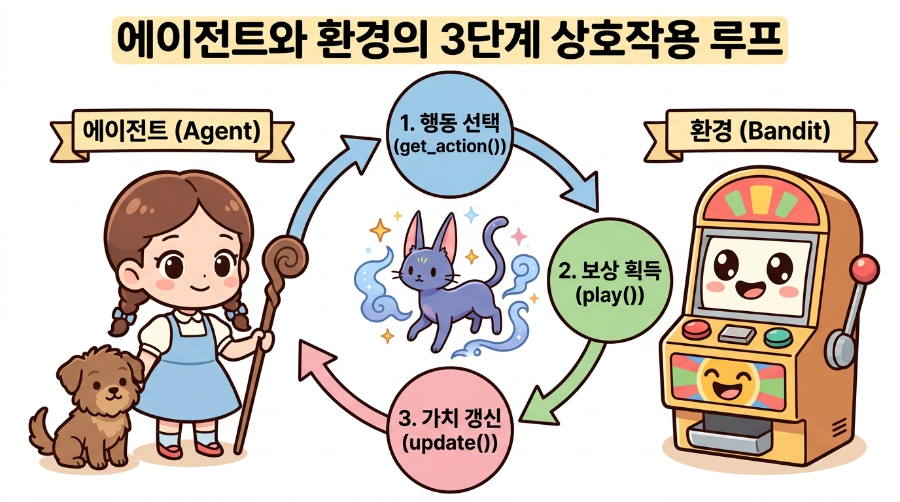
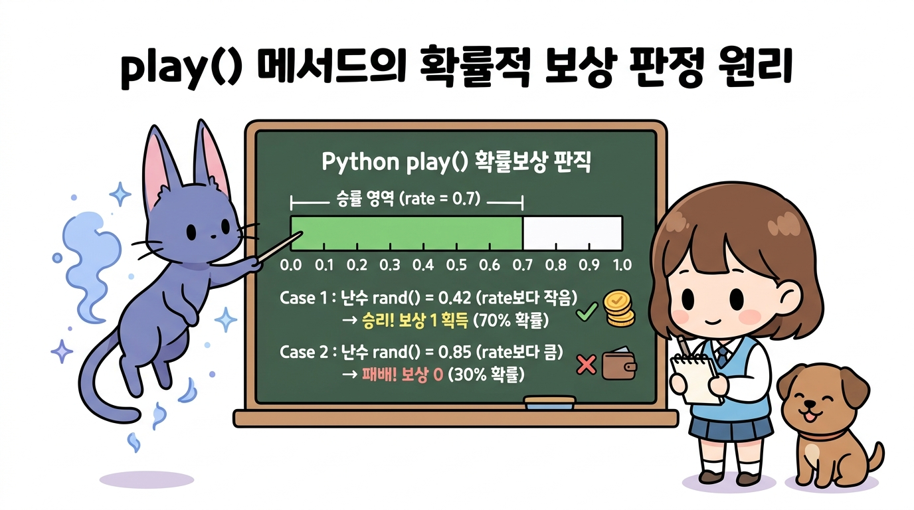
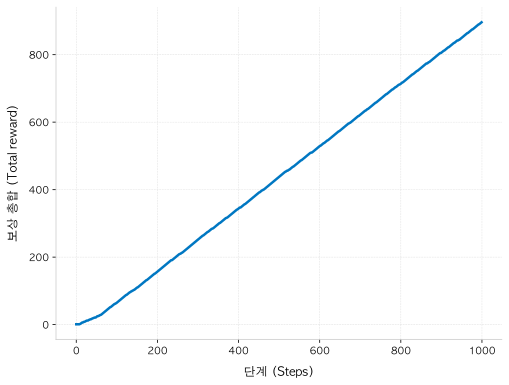
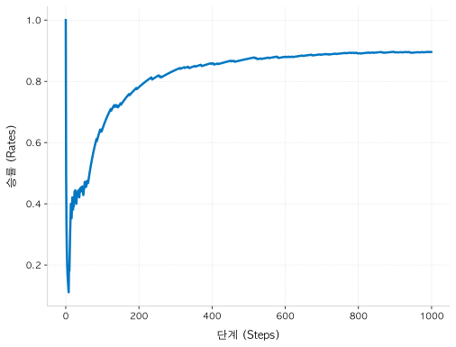
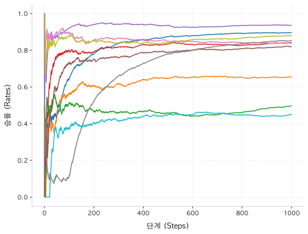
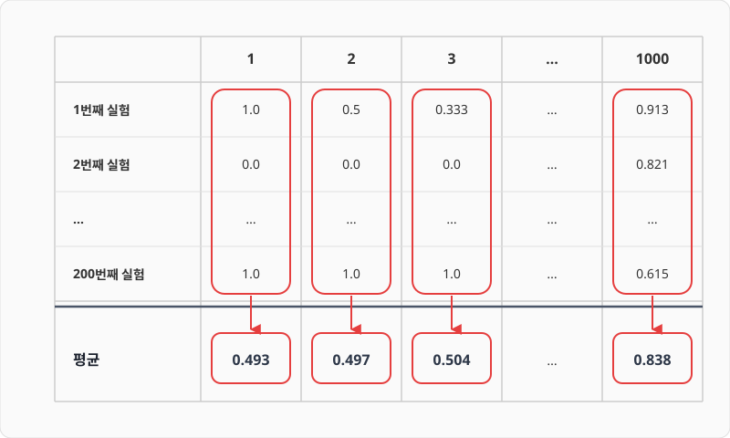
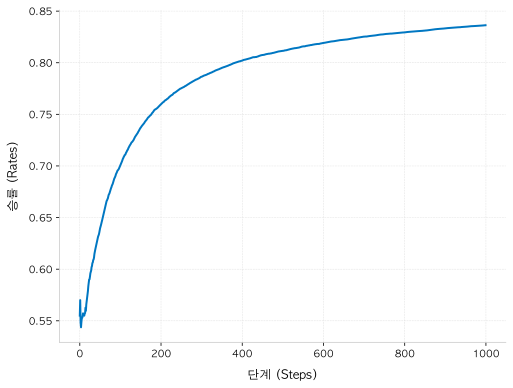
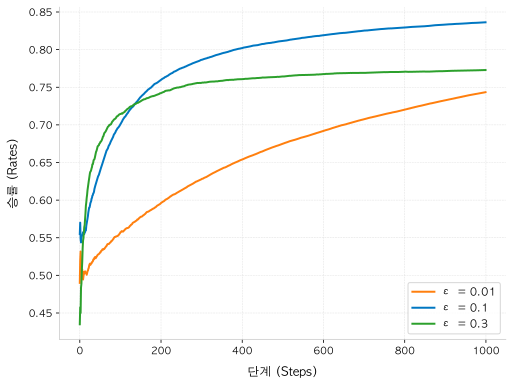

3.4 밴디트 알고리즘 구현
그림 03-4 마법 컴퓨터 스크린의 파이썬 코드 홀로그램을 보며 밴디트 알고리즘을 열심히 코딩하는 도로시와 지니
이론으로 공부한 밴디트 솔루션을 실제 파이썬 코드로 이식해 봅니다. 지니가 띄워준 신비한 홀로그램 스크린 코드 구조를 보며, Agent 클래스와 Bandit 클래스가 상호 연결되는 완벽한 루프의 코딩 실습을 3.4장에서 자신 있게 완수해봅시다!
밴디트 문제를 푸는 알고리즘을 코드로 구현할 차례입니다.
3.4.1 구현조건
여기서는 조건을 단순화하여 슬롯머신이 반환하는 코인을 최대 1개로 제한하겠습니다.
즉, 슬롯머신을 플레이하면 승리(1)와 패배(0) 중 하나를 보상으로 얻습니다. 그리고 슬롯머신에는 승리 확률(코인 1개를 내어줄 확률)이 설정되어 있다고 가정합니다.
예를 들어 승률이 0.6으로 설정되어 있다면, 60%의 확률로 코인 1개를 주고 40%의 확률로 0개를 줍니다. 그러면 슬롯머신의 가치(슬롯머신이 돌려주는 코인의 기댓값)는 0.6입니다. 승률이 그대로 슬롯머신의 가치가 되는 것이죠.
그림 3-17 밴디트 구현 조건 예시 (승리 시 1, 패배 시 0)

슬롯머신은 총 10대이고, 플레이어는 각각의 승률이 어떻게 설정되어 있는지 알 수 없습니다.
3.4.2 경험에 의한 슬롯머신 찾기
따라서 실제 플레이한 경험을 토대로 승률이 높은 슬롯머신을 찾아야 합니다.
에이전트(플레이어)와 밴디트(환경)가 어떻게 맞물려 돌아가는지 전체적인 학습 루프를 도식화한 그림입니다.

행동 선택(get_action), 실제 플레이를 통한 보상 획득(play), 보상을 통한 가치 추정치 갱신(update) 순으로 이루어지는 순환적인 강화학습 과정을 거치게 됩니다.
3.4.3 슬롯머신 구현
슬롯머신부터 구현해보죠. 승률은 무작위로 설정하겠습니다.
3.4.3.1 Bandit 클래스 구조 설계
저는 다음과 같이 Bandit 클래스 하나에 슬롯머신 10대가 존재하도록 구현했습니다.
소스 코드: bandit.py
import numpy as np
class Bandit:
def __init__(self, arms=10): # arms = 슬롯머신 대수
self.rates = np.random.rand(arms) # 슬롯머신 각각의 승률 설정(무작위)
def play(self, arm):
rate = self.rates[arm]
if rate > np.random.rand():
return 1
else:
return 0
3.4.3.2 무작위 승률 설정 동작 원리
__init__() 메서드에서 초기화 매개변수로 arms를 받아 설정합니다.
arms는 ‘팔의 개수’를 의미하며 이 문제에서는 ‘슬롯머신의 대수’에 해당합니다. 기본값은 10대로 설정했습니다. 그런 다음 각 머신의 승률을 무작위로 설정합니다.
NOTE_
np.random.rand()는 0.0 이상 1.0 미만의 무작위 수를 생성합니다. 이때 무작위 수는 균등하게 분포되도록 만들어집니다. 0.0 이상 1.0 미만 범위에서 무작위 수가 치우침 없이 골고루 생성된다는 뜻입니다. 또한np.random.rand(10)처럼 인수로 10을 넘기면 0.0 이상 1.0 미만의 무작위 수를 10개 생성합니다. 이렇게 하면 슬롯머신 10대의 승률이 각각 0에서 1 사이로 무작위로 설정됩니다.
3.4.3.3 play 메서드를 통한 보상 판단
다음으로 play(self, arm) 메서드를 봅시다.
매개변수 arm은 몇 번째 팔(슬롯머신)을 플레이할지를 지정합니다. 본문 코드를 보면 arm번째 머신의 승률을 가져온 후 np.random.rand()로 0.0~1.0 미만의 무작위 수를 하나 생성합니다.
이 무작위 수와 arm번째 슬롯머신의 승률을 비교하여, 승률이 무작위 수보다 크면 보상으로 1을 반환하고 그렇지 않으면 0을 반환합니다.
그림 3-18 play 메서드의 확률적 보상 판단 원리

3.4.3.4 단일 슬롯머신 테스트 실행
이제 Bandit 클래스를 이용하여 슬롯머신을 가지고 놀아봅시다.
bandit = Bandit()
for i in range(3):
print(bandit.play(0))
출력 결과
1
0
0
0번째 슬롯머신을 3회 연속으로 플레이하여 얻은 코인 개수를 출력했습니다(출력 결과는 실행할 때마다 달라집니다).
이상으로 슬롯머신 구현이 끝났습니다.
다음은 에이전트(플레이어) 차례입니다.
3.4.4 에이전트 구현
3.4.2절에서 표본 평균을 구하는 효율적인 구현 방법, 즉 증분 구현을 배웠습니다.
3.4.4.1 단일 슬롯머신 가치 추정 복습
이번 절에서는 복습도 할 겸 0번째 슬롯머신에만 집중하여 해당 슬롯머신의 가치를 추정해보겠습니다.
코드는 다음과 같습니다.
bandit = Bandit()
Q = 0
for n in range(1, 11): # 10번 반복
reward = bandit.play(0) # 0번째 슬롯머신 플레이
Q += (reward - Q) / n # 가치 추정치 갱신
print(Q)
이 코드는 0번째 슬롯머신을 10번 연속으로 플레이하고 보상을 받을 때마다 슬롯머신의 가치 추정치를 갱신합니다.
여기까지가 지난 절의 복습입니다.
3.4.4.2 전체 슬롯머신(10대) 가치 추정 확장
이제 10대의 슬롯머신 각각의 가치 추정치를 구해보겠습니다.
bandit = Bandit()
Qs = np.zeros(10) # 각 슬롯머신의 가치 추정치
ns = np.zeros(10) # 각 슬롯머신의 플레이 횟수
for n in range(10):
action = np.random.randint(0, 10) # 무작위 행동(임의의 슬롯머신 선택)
reward = bandit.play(action)
ns[action] += 1 # action번째 슬롯머신을 플레이한 횟수 증가
Qs[action] += (reward - Qs[action]) / ns[action]
print(Qs)
이번에는 원소 10개짜리 1차원 배열인 Qs와 ns 변수를 새롭게 준비했습니다(np.zeros() 함수로 원소를 모두 0으로 초기화).
그리고 ns의 각 원소에는 해당 슬롯머신을 플레이한 횟수를 저장합니다. 이렇게 하여 슬롯머신 각각의 가치를 추정할 수 있습니다.
3.4.4.3 Agent 클래스 설계 및 구현
지금까지 익힌 지식을 활용하여 Agent 클래스를 구현하겠습니다.
Agent 클래스는 ε-탐욕 정책을 따라 행동을 선택하도록 할 것입니다.
소스 코드: bandit.py
class Agent:
def __init__(self, epsilon, action_size=10):
self.epsilon = epsilon # 무작위로 행동할 확률(탐색 확률)
self.Qs = np.zeros(action_size)
self.ns = np.zeros(action_size)
def update(self, action, reward): # 슬롯머신의 가치 추정
self.ns[action] += 1
self.Qs[action] += (reward - self.Qs[action]) / self.ns[action]
def get_action(self): # 행동 선택(ε-탐욕 정책)
if np.random.rand() < self.epsilon:
return np.random.randint(0, len(self.Qs)) # 무작위 행동 선택
return np.argmax(self.Qs) # 탐욕 행동 선택
3.4.4.4 Agent 핵심 메서드 동작 원리
초기화 매개변수 epsilon은 ε-탐욕 정책에 따라 무작위로 행동할 확률입니다.
예를 들어 epsilon=0.1이면 10%의 확률로 무작위하게 행동합니다. action_size는 에이전트가 선택할 수 있는 행동의 가지 수입니다. 지금 문제에서는 슬롯머신의 대수를 뜻합니다.
슬롯머신의 가치 추정은 update() 메서드가 담당합니다. 이 메서드의 코드는 앞서 설명한 코드와 거의 같습니다.
마지막으로 get_action()은 ε-탐욕 정책으로 행동을 선택하는 메서드입니다. self.epsilon의 확률로 무작위 행동을 선택하고, 그 외에는 가치 추정치가 가장 큰 행동을 선택합니다. 참고로 np.argmax(self.Qs)는 배열 self.Qs에서 값이 가장 큰 원소의 인덱스를 가져옵니다.
여기까지가 Agent 클래스를 구현하는 방법입니다.
3.4.5 실행해보기
이제 Bandit 클래스와 Agent 클래스를 이용하여 행동을 취해봅시다.
3.4.5.1 상호작용 루프 구현 및 실행
행동을 1000번 수행하여 보상을 얼마나 얻는지 보겠습니다.
소스 코드: bandit.py
import matplotlib.pyplot as plt # matplotlib 임포트
steps = 1000
epsilon = 0.1
bandit = Bandit()
agent = Agent(epsilon)
total_reward = 0
total_rewards = [] # 보상 합
rates = [] # 승률
for step in range(steps):
action = agent.get_action() # 1 행동 선택
reward = bandit.play(action) # 2 실제로 플레이하고 보상을 받음
agent.update(action, reward) # 3 행동과 보상을 통해 학습
total_reward += reward
total_rewards.append(total_reward) # 현재까지의 보상 합 저장
rates.append(total_reward / (step + 1)) # 현재까지의 승률 저장
print(total_reward)
# 그래프 그리기: 단계별 보상 총합(그림 3-19)
plt.ylabel('Total reward')
plt.xlabel('Steps')
plt.plot(total_rewards)
plt.show()
# 그래프 그리기: 단계별 승률(그림 3-20)
plt.ylabel('Rates')
plt.xlabel('Steps')
plt.plot(rates)
plt.show()
출력 결과
859
3.4.5.2 에이전트와 환경의 상호작용 3단계
먼저 for 루프 내부에 주목해보죠.
이 영역은 에이전트(Agent)와 환경(Bandit/Environment)이 끊임없이 신호를 주고받으며 학습을 고도화하는 ‘상호작용 루프(Interaction Loop)’입니다.
루프 내부는 다음의 3단계로 구성됩니다:
1행동 선택 (agent.get_action()):- 에이전트가 ε-탐욕 정책을 통해 현재 가장 최선으로 보이는 머신을 당길지(활용), 혹은 새로운 머신을 탐구할지(탐색) 선택하여 최종 행동(
action)을 결정합니다.
- 에이전트가 ε-탐욕 정책을 통해 현재 가장 최선으로 보이는 머신을 당길지(활용), 혹은 새로운 머신을 탐구할지(탐색) 선택하여 최종 행동(
2환경의 반응 (bandit.play(action)):- 지정된 행동에 맞추어 환경(슬롯머신)이 미리 내장되어 있는 확률(승률)에 따라 주사위를 굴리고, 그 결과로 코인
1개 혹은0개의 보상(reward)을 반환합니다.
- 지정된 행동에 맞추어 환경(슬롯머신)이 미리 내장되어 있는 확률(승률)에 따라 주사위를 굴리고, 그 결과로 코인
3가치 추정치 갱신 및 학습 (agent.update(action, reward)):- 에이전트는 방금 획득한 보상 정보와 해당 행동의 시도 횟수를 반영해, 증분 수식을 거쳐 해당 머신의 가치 추정치(
Qs)를 한 단계 갱신합니다.
- 에이전트는 방금 획득한 보상 정보와 해당 행동의 시도 횟수를 반영해, 증분 수식을 거쳐 해당 머신의 가치 추정치(
이 3단계 과정을 1000번 반복 수행하며 각 시점의 보상 총합(total_rewards)과 누적 평균 승률(rates)을 실시간으로 추적하여 학습 추이를 평가합니다.
이 코드를 실행하니 최종적으로 얻은 보상의 총합은 859가 되었습니다(결과는 실행할 때마다 달라집니다). 1000번의 플레이 중 859번 ‘승리’했다는 뜻입니다.
3.4.5.3 단계별 보상 총합 결과 분석
참고로 이때 total_rewards의 추이를 그려보니 [그림 3-19]와 같은 결과가 나왔습니다.
그림 3-19 단계에 따른 보상 총합

그래프에서 볼 수 있듯이 단계가 늘어날 때마다 보상의 총합이 꾸준히 증가합니다.
다만 증가 방식의 특징, 예컨대 단계 증가와 보상 증가의 정밀한 관계 같은 정보는 이 그래프만으로는 알아내기 어렵습니다.
3.4.5.4 단계별 승률 결과 분석
앞의 코드가 생성한 두 번째 그래프인 [그림 3-20]을 살펴보죠.
세로축은 승률입니다.
그림 3-20 단계별 승률

이 그래프를 보면 100단계에서의 승률은 약 0.4입니다.
이를 기준으로 단계를 거듭할수록 승률이 높아지고 있습니다. 초반에 승률이 빠르게 상승하고 500단계를 넘어선 이후에도 완만하게 상승 추세를 이어가고 있습니다. 최종 승률은 0.8이 넘었습니다.
우리가 구현한 ε-탐욕 정책의 학습이 제대로 이루어지고 있는 것으로 보입니다.
3.4.6 알고리즘의 평균적인 특성
방금 구현한 코드는 실행할 때마다 결과가 달라집니다.
3.4.6.1 10회 실행을 통한 결과의 무작위성 관찰
예를 들어 [그림 3-20]의 그래프는 실행할 때마다 모양이 크게 달라집니다. 시험 삼아 같은 코드를 10번 실행하고 그 결과를 하나의 그래프로 그려보니 [그림 3-21]와 같았습니다.
그림 3-21 10번의 결과를 한꺼번에 그려보기

이처럼 실험 때마다 결과가 다른 이유는 코드에 무작위성이 포함되어 있기 때문입니다.
먼저 슬롯머신 10대 각각의 승률을 무작위로 설정했습니다. 그리고 에이전트가 활용한 ε-탐욕 정책에서도 행동을 무작위로 선택했죠. 이러한 무작위성 때문에 매번 결과가 달라질 수 있습니다.
NOTE_ 지금의 무작위성은 코드에서 ‘시드seed‘가 바뀌기 때문에 생겨납니다.
np.random.seed(0)식으로 시드를 고정하면 항상 똑같은 결과를 얻을 수 있습니다.
3.4.6.2 알고리즘 평가를 위한 평균 성능 검증의 중요성
강화 학습 알고리즘을 비교할 때 (대부분의 경우) 무작위성 때문에 한 번의 실험만으로 판단하는 건 큰 의미가 없습니다.
그보다는 알고리즘의 ‘평균적인 우수성’을 평가해야 합니다.
같은 실험을 여러 번 반복하여 결과를 평균하는 식으로 알고리즘의 평균적인 우수성을 알 수 있습니다.
3.4.6.3 다중 실행 시뮬레이션 구현 (200회 반복)
그래서 슬롯머신을 1000번 플레이하는 실험을 총 200번 반복하여 평균을 내보겠습니다.
소스 코드: bandit_avg.py
runs = 200
steps = 1000
epsilon = 0.1
all_rates = np.zeros((runs, steps)) # (200, 1000) 형상 배열
for run in range(runs): # 200번 실험
bandit = Bandit()
agent = Agent(epsilon)
total_reward = 0
rates = []
for step in range(steps):
action = agent.get_action()
reward = bandit.play(action)
agent.update(action, reward)
total_reward += reward
rates.append(total_reward / (step + 1))
all_rates[run] = rates # 1 보상 결과 기록
avg_rates = np.average(all_rates, axis=0) # 2 각 단계의 평균 저장
# 그래프 그리기: 단계별 승률(200번 실험 후 평균)
plt.ylabel('Rates')
plt.xlabel('Steps')
plt.plot(avg_rates)
plt.show()
3.4.6.4 200회 평균 승률 그래프 분석
똑같은 실험을 200번 수행하고 all_rates에 각 실험의 결과를 저장했습니다.
구체적으로 1에서 원소 1000개짜리 배열인 rates를 all_rates의 해당 위치에 저장합니다. 그런 다음 2에서 axis=0으로 지정하면 단계별 평균을 계산합니다.
[그림 3-22]을 보면 계산 과정이 더 명확하게 이해될 것입니다.
그림 3-22 단계별 평균 구하기

앞의 코드를 실행하면 다음 그래프를 얻을 수 있습니다.
그림 3-23 단계별 승률(200번 실험 후 평균)

알고리즘을 평가할 때는 이처럼 평균을 이용해야 합니다.
[그림 3-23]의 그래프를 보면 이번 알고리즘(ε-탐욕 정책)의 특징이 더 잘 드러납니다. 승률이 처음에는 0.5 정도로 시작해서 단계를 거듭할수록 빠르게 높아지고 600단계 정도에 이르러 거의 최대를 찍습니다. 최종적으로 약 0.83을 기록했습니다.
3.4.6.5 ε(탐색 확률) 변경에 따른 균형 제어와 성능 비교
참고로 이 결과는 ε-탐욕 정책에서 ε = 0.1로 설정한 결과입니다.
ε값을 변경하면 결과도 달라집니다. 실제로 값을 바꿔보죠. ε을 각각 0.01, 0.1, 0.3으로 설정해 실험해보니 결과가 다음과 같았습니다.
그림 3-24 ε-탐욕 정책의 ε값을 바꾼 결과

그림 3-24와 같이 ε의 값에 따라 승률이 달라집니다.
결과를 보면 ε = 0.3이면 승률은 빠르게 상승하지만 400단계를 넘어가면서 상승세가 급격히 꺾입니다. 30%라는 높은 확률로 탐색을 시도하기 때문에 최적의 머신을 선택하는 ‘활용의 비율이 너무 낮기 때문’으로 짐작됩니다. 즉, 탐색을 너무 많이 했다고 볼 수 있습니다.
다음은 ε = 0.01인 경우를 보죠(1% 확률로 탐색). 보상은 꾸준히 상승하지만 상승 속도는 세 가지 중 가장 느립니다. 탐색 비율이 너무 작아서 최적의 머신을 찾을 확률이 낮았기 때문으로 보입니다.
마지막으로 ε = 0.1입니다. 보다시피 결과가 가장 좋습니다. 즉, 탐색 비율을 10%로 할 때의 ‘활용과 탐색의 균형’이 세 가지 중 가장 좋았다고 할 수 있습니다.
이처럼 ε의 값으로 ‘활용과 탐색의 균형’을 조절할 수 있습니다.
물론 최적의 ε값은 문제에 따라 달라집니다.
예를 들어 단계 수가 100일 때는 시도한 세 가지 ε 중 ε = 0.3일 때의 결과가 가장 좋았습니다. 이번처럼 ε의 값을 다양하게 시도해보면 최적의 ε값을 찾을 수 있을 것입니다.
지금까지 ε-탐욕 정책을 구현해보았습니다.
3.4.7 정리 및 요약
이번 절에서는 앞서 배운 밴디트 알고리즘 이론을 바탕으로 객체 지향적인 파이썬 코드 구현과 성능 평가를 진행했습니다.
요약은 다음과 같습니다.
- 객체 지향 모델링: 10대의 슬롯머신(환경)을
Bandit클래스로, 에이전트(플레이어)의 ε-탐욕 정책을Agent클래스로 코딩하여 강화학습의 문제 영역과 행동 주체를 명확히 객체로 분리하여 구현했습니다. - 에이전트-환경 상호작용 루프: 행동 선택(
get_action()) → 실제로 레버를 당겨 보상 획득(play()) → 보상을 바탕으로 한 가치 추정치 업데이트(update()) 순서로 순환하는 강화학습 상호작용 과정을 구현했습니다. - 평균 검증의 필요성: 무작위성(무작위 슬롯머신 설정, ε 확률에 따른 무작위 행동) 때문에 단 1회의 실험 결과는 신뢰하기 어렵습니다. 알고리즘의 우수성을 공정하게 평가하기 위해 200회 반복 실험 후의 평균 승률 추이를 활용하는 평가 표준을 확립했습니다.
- 활용과 탐색의 균형 조율: 하이퍼파라미터인 탐색 확률 ε의 값에 따라 학습 곡선이 크게 달라집니다.
- $ε = 0.3$: 빠른 초반 탐색으로 정보를 얻지만, 활용의 비율이 낮아 최종 승률이 수렴 한계에 봉착합니다 (과도한 탐색).
- $ε = 0.01$: 학습 진행 속도가 너무 더디어 최적의 행동을 찾는 데 시간이 너무 오래 걸립니다 (부족한 탐색).
- $ε = 0.1$: 세 조건 중 활용과 탐색의 최상의 균형점을 달성하여 가장 우수한 누적 성과를 거두었습니다.